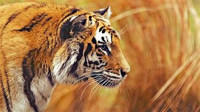

The tiger (Panthera tigris) is the largest living cat species and a member of the genus Panthera native to Asia. It has a powerful, muscular body with a large head and paws, a long tail, and distinctive black, mostly vertical stripes on orange fur. It was first scientifically described in 1758 and is traditionally classified into eight recent subspecies, though some recognise only two subspecies, namely mainland Asian tigers and island tigers of the Sunda Islands.
Throughout the tiger's range, it inhabits mainly forests, from coniferous and temperate broadleaf and mixed forests in the Russian Far East and Northeast China to tropical and subtropical moist broadleaf forests on the Indian subcontinent and Southeast Asia. The tiger is an apex predator and preys mainly on ungulates such as deer and wild boar, which it takes by ambush. It lives a mostly solitary life and occupies home ranges, which it defends from individuals of the same sex. The range of a male tiger overlaps with that of multiple females with whom he has reproductive claims. Females give birth to usually two or three cubs that stay with their mother for about two years. When becoming independent, they leave their mother's home range and establish their own.
Since the early 20th century, tiger populations have lost at least 93% of their historic range and are locally extinct in West and Central Asia, in large areas of China, and on the islands of Java and Bali. Today, the tiger's range is severely fragmented. The species is listed as Endangered on the IUCN Red List of Threatened Species, as its range is thought to have declined by 53% to 68% since the late 1990s. Major reasons for this decline are habitat destruction and fragmentation due to deforestation, poaching for fur, and the illegal trade of tiger body parts for medicinal purposes. Tigers are also victims of human–wildlife conflict due to encroachment in countries with a high human population density. Tigers sometimes attack and even prey on people.
The tiger is among the most popular of the world's charismatic megafauna. It has been kept in captivity since ancient times and has been trained to perform in circuses and other entertainment shows. The species has been popular in the exotic pet trade. The tiger featured prominently in the ancient mythology and folklore of cultures throughout its historic range and has continued to appear in culture worldwide.